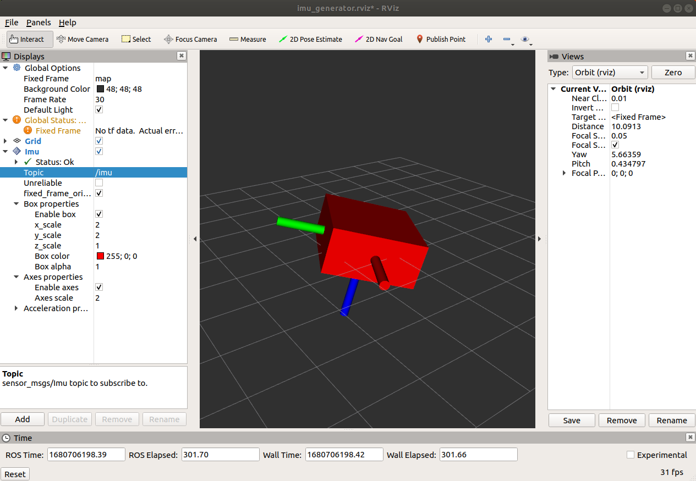

5. Visualizing the IMU data in ROS 2
While getting raw data in a terminal log demonstrates we have a proper IMU connection, we can also visualize the IMU orientation in Rviz.
~$
make ros-sdk-run-imu-vis
# or
~$
docker compose run -it imu_vis
# or start ROS shell and run this inside:
~$
ros2 launch adi_imu imu_with_madgwick_filter_rviz.launch.py \
iio_context_string:="ip:12.34.56.78" \
imu_device_name:="adis16607-3"
You should see something like this:


Behind the scenes, this runs:
a Madgwick filter to integrate IMU data into an orientation estimate
Rviz to display the orientation estimate